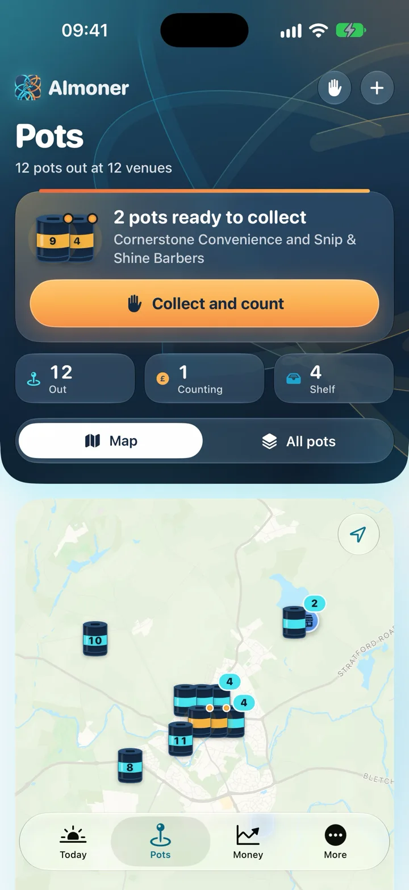
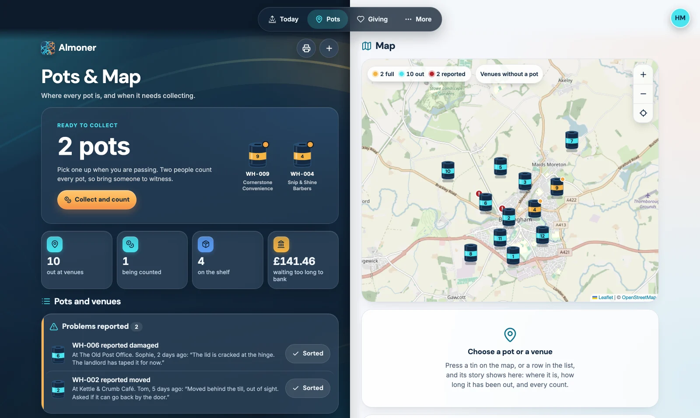
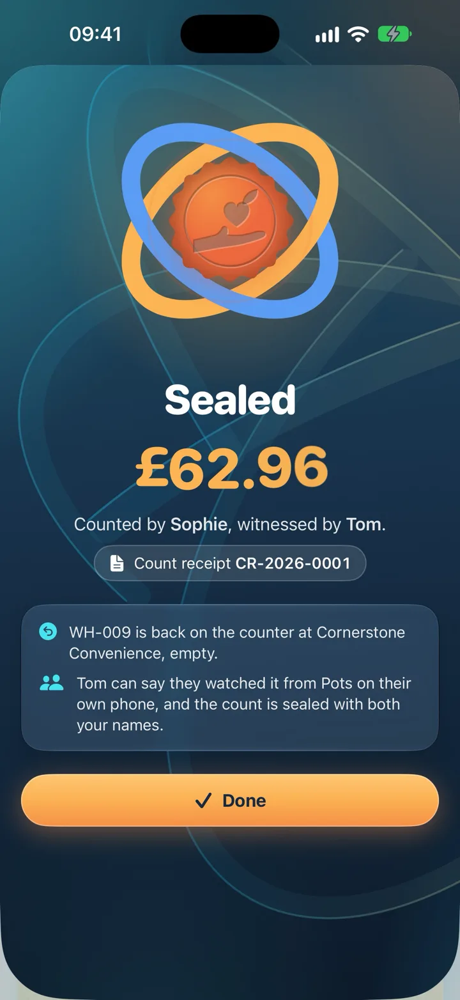
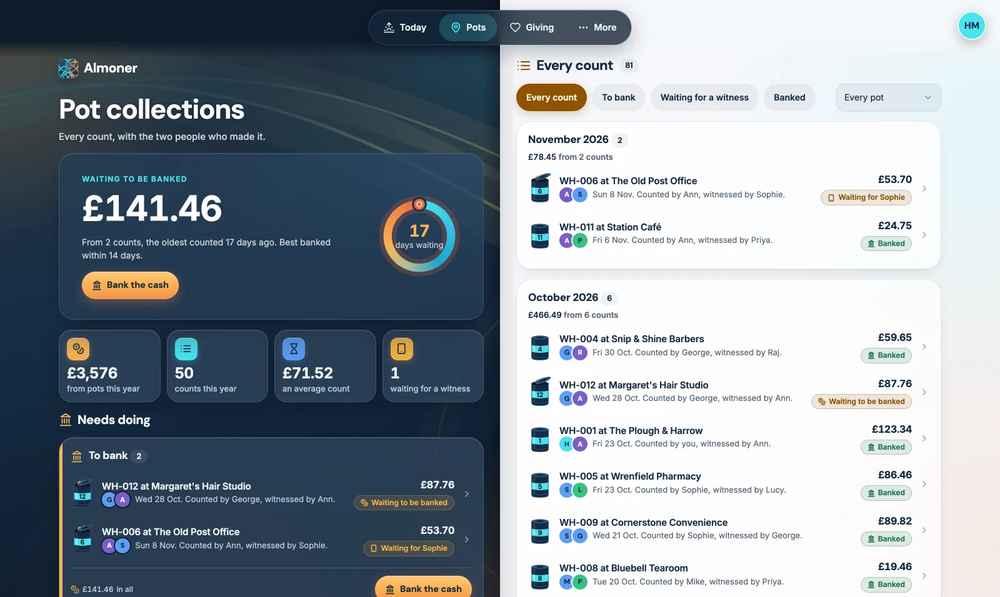
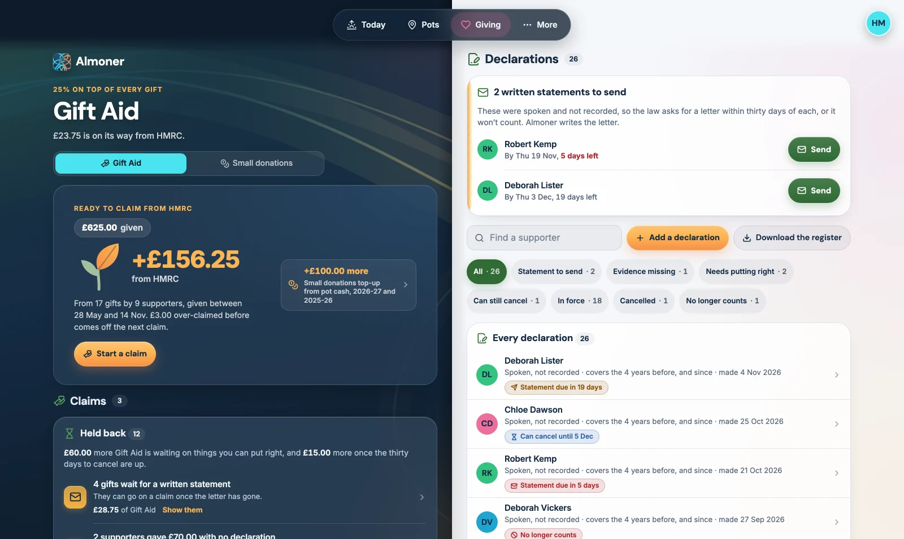
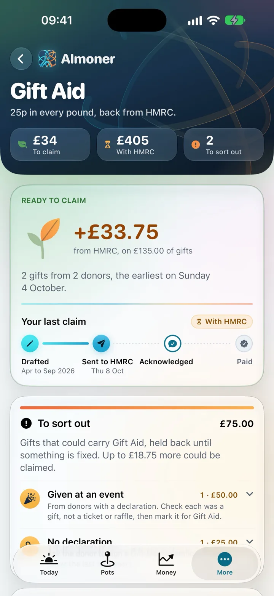
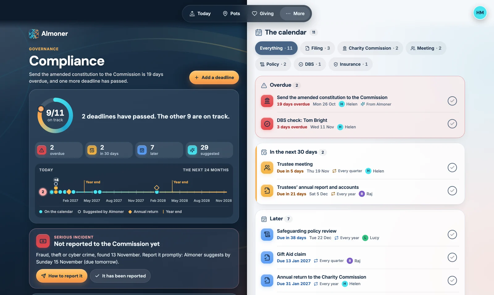
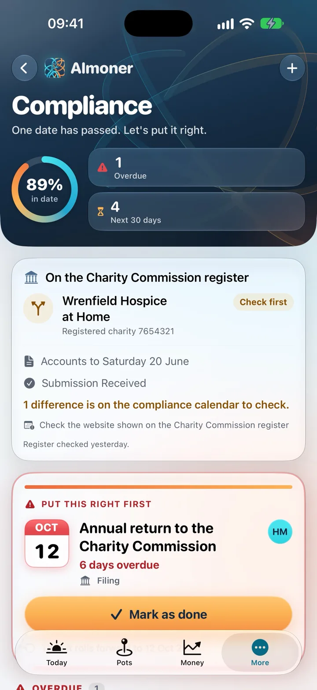

What Almoner is#
Almoner keeps a small charity's fundraising records in one place. Its heart is the collection pot: where each pot is, the venue hosting it, the count when it comes back — with the name of the person who counted and the person who watched — and the paying-in reference once the cash reaches the bank. Around that sit the rest of the paperwork a trustee has to stand behind: donors and Gift Aid, grants and restricted funds, receipts and payments for the year, volunteers and their hours, documents and the compliance calendar.
Almoner is a record, not a till. It never takes money from your donors and it never moves money. Donations is your charity's own written record of money it has already received; a pot count is the record of the cash in a tin. Everyone on your team works from the same records at the same time, each seeing the part their role allows.

Creating your account and signing in#
Everyone has their own sign-in — nobody shares one. There are two ways in: an email address and password, or one of the four buttons for an account you already have (Google, Apple, Microsoft or Facebook). The same sign-in works on the website and in the iPhone and iPad app.
Creating an account with an email address#
- Go to almoner.app and click Start your free trial. If your charity invited you, use the link in the invitation email, or click Create your account on the sign-in page. Either way, use the email address the invitation was sent to.
- On Create your account, fill in Email, Choose a password and Type it again, then click Create my account.
- On Enter your code, type the six-digit code from the email you've been sent and click Confirm my email. It can take a minute to arrive. No sign of it? Click Send me a new code, or Use a different email if you mistyped the address.
- You're signed in. If you were invited you land in your charity; if not, you're asked to name your charity.
Signing in and out#
Open almoner.app and click Sign in. On the Welcome back page, enter your Email and Password and click Sign in, or use one of the four account buttons. If you followed a link to a particular page, you land on that page once you're in.
To sign out, open More and click Log out at the foot of the sheet — or open More → Charity settings (Your account if you're not an admin) and click Sign out in the You panel.
Forgotten your password?#
- On the sign-in page, click Forgotten it? beside the password box.
- Enter your Email and click Send me the link, then check your inbox — and the junk folder.
- Open the link, fill in New password and Type it again, and click Save my new password. You're taken back to sign in with the new one.
Deleting your account#
Anyone can delete their own sign-in: open More → Charity settings (or Your account), click Delete my account, read what happens, then press and hold Hold to delete my account. It can't be undone.
- Your sign-in is deleted and you're signed out straight away.
- What you did stays on the charity's record — pot counts you made or witnessed, hours, signatures and notices. They are the charity's records, not yours.
- Anything you were holding goes back to the team: shifts ahead, unfinished tasks and signature requests.
In the iPhone app the same button is on the Account page, under More.
If something's not right#
"That email and password don't match an account."
Re-type both carefully, or click Forgotten it? to choose a new password. If you first signed up with Google, Apple, Microsoft or Facebook, use that button instead — there's no password on the account.
"That code didn't work. Check it against the newest email, or ask for a new one."
The code was mistyped, or an older code was entered after a new one was sent.
Use the code from the most recent email, or click Send me a new code. You can ask again after a short wait — the page counts the seconds down.
"The two passwords don't match. Type the same one in both."
The second box is there to catch a slip of the finger. Type the password again in both; a small They match tick appears when they agree.
No password-reset email arrives
The page shows the same "Check your email" message whether or not the address has an account — so a typo, an account made with Google or Apple, or a junk filter all look the same.
Check junk, confirm you typed the address you signed up with, and remember that an account made with one of the four account buttons has no Almoner password.
"This link doesn't work" or "Your password wasn't changed"
Part of the link's address is missing — email software sometimes splits a long link in two — or the link has run out.
Click Send me a new link and use the newest email.
"This account isn't on a team yet"
You're signed in, but with an address Almoner doesn't know — usually a different one from the address your charity invited.
Click Try another account and sign in with the email address the invitation was sent to. If you weren't invited, ask your charity's admin to invite you. Still stuck? Email for help is on the same screen.
"You're the charity's only admin. Make someone else an admin first…"
A charity is never left without an admin, so the last one can't delete their account.
Click Choose another admin, make someone else an admin, then delete your own account. If you're the very last person in the charity's Almoner, email peter@edwardsapps.co.uk to close the charity's account.
"Almoner couldn't be reached. Check the connection and try again."
The sign-in page couldn't get through. Check your wifi or signal and press the button again — nothing was lost.
Your charity, the trial and subscribing#
Every sign-in belongs to one charity, and each charity's records are private to its own team. The first person from a charity names it; everyone else joins by invitation. Naming a charity starts its 14-day free trial — no card needed — and makes you its admin.
Naming your charity (first person only)#
- Create your account at almoner.app and sign in — the Name your charity page appears by itself.
- Type the name in Your charity’s name and click Start my charity’s free trial.
- You land on Today, as the charity's admin, with 14 days of everything.
- Open More → Charity settings and fill in the charity's details, then invite your team.
During the trial#
Nothing is held back during the trial. An admin can see how long is left at any time: More → Charity settings, in the Almoner subscription panel — "9 days left of your free trial", with the day it ends. You can choose a plan there whenever you're ready; nothing on the record changes when you do.
Subscribing#
One subscription covers the whole charity — everyone on the team, on the website and in the app. It's £12 a month or £120 a year, including VAT, paid by card at almoner.app. Only an admin can subscribe.
- Open More → Charity settings and find the Almoner subscription panel — or, once the trial has run out, just sign in: the plans are the first thing you see.
- Click Choose monthly or Choose yearly.
- Complete the secure checkout page you're taken to.
- You come back to "Thank you. Setting things up..." and then "Thank you. Almoner is yours." Click Go to Today. As soon as the payment is confirmed, Almoner opens again for the whole team.
Paying through Apple instead. If you'd rather pay through Apple, your charity's admin can subscribe in the iPhone or iPad app, at £11.99 a month or £119.99 a year. It covers everyone, on every device and the website, exactly as the card subscription does. A subscription bought through Apple is changed or cancelled in that Apple Account's subscriptions, not on the website.
Changing or cancelling a card subscription. Each plan renews until you cancel it. To change or cancel, email peter@edwardsapps.co.uk.
When the trial or subscription ends#
When neither a trial nor a subscription is running, everyone who signs in sees Your free trial has ended (or Your subscription has ended) instead of the app. Admins see the two plans; everyone else is asked to have a word with their admin. Nothing is deleted — every pot, count and donation your team recorded is still there, and Almoner opens again for everyone the moment an admin chooses a plan. You can still sign out or delete your own account from that screen.
If something's not right#
You were invited, but you see "Name your charity"
No invitation was found for the email address you signed in with — it may have gone to a different address.
Don't name a charity. Check with your admin exactly which address was invited, then sign out and sign in with that one. Invitations are matched on the email address, so the two must be the same.
"The checkout didn't open. Please try again."
The payment page couldn't be started. Check the connection and press Choose monthly or Choose yearly again. Nothing has been charged.
"This is taking a little longer"
Your payment has gone through, but confirming it is taking longer than usual.
Nothing is lost: the subscription switches on by itself as soon as it's confirmed, and you can leave the page. Click Check again after a minute. Still waiting in an hour? Use Email for help on the same page.
"Please ask your charity's admin to choose a plan"
The trial or subscription has ended and you're not an admin, so you can't subscribe yourself.
Have a word with whoever runs Almoner for your charity. They choose a plan from the same screen, and Almoner opens again for everyone, just as you left it.
"Your plan was bought in the Almoner iPhone app"
The charity's subscription was bought through Apple and has lapsed.
Renew it in the iPhone app, in the Apple Account that bought it — or choose a card plan on the website instead. Either opens Almoner for the whole team.
Your team and who sees what#
People join by invitation, and every invitation carries a role. The role decides which pages a person can open. The rule to remember: volunteers never see the charity's money.
| Role | What they can open |
|---|---|
| Volunteer | Today, Pots & Map, Pot Collections, Volunteers (their tab is called Rota), Events, Tasks, Notice board and Documents. No donors, donations, campaigns, grants, Gift Aid, finance or compliance, and no totals — a volunteer sees the amount only on a count they made or witnessed. |
| Trustee | Everything a volunteer sees, plus the money and governance pages: Donations, Donors, Campaigns, Gift Aid, Finance, Grants & Funds and Compliance. Trustees can also bank the cash and correct a count. |
| Admin | Everything a trustee sees, plus the charity's settings, the team and the subscription. |
The role is about what someone can see in Almoner. Whether they are a trustee of the charity in law is recorded separately on their entry in the team list, so a volunteer treasurer's helper can have the Trustee role without being on the board — and a board member can be a Volunteer in Almoner if that's all they need.
Inviting someone (admins)#
- Open More → Charity settings and find The team.
- Click Invite someone.
- Type Their email address and choose What they can do: Volunteer, Trustee or Admin.
- Click Send the invitation. They get an email with a link. When they first sign in with that address they join with the role you chose, and see "Welcome. You've joined as a volunteer." If the address already had an Almoner account, they're on the team at once.
Until they sign in, the invitation waits under Invited, not yet joined. Click Send again to resend it.
Changing a role, trustee details, or removing someone#
Click a person in The team to open their sheet.
- Role — choose a different card under What they can do in Almoner and save. You can't change your own role; another admin can.
- Trustee of the charity — switch on the trustee toggle to record that they sit on the board, with their Board role, Appointed on, Term ends and, if they have, Stepped down on. If the charity's settings give a length for a trustee's term, Almoner suggests the end date — click Use this date.
- Leaving the team — press and hold the button that reads "Hold to remove" and their first name. Their pot counts, hours, signatures and notices stay on the charity's record; shifts ahead, unfinished tasks and signature requests are handed back to the team; and they can no longer sign in.
Inviting people and changing roles is done on the website. The iPhone app's Account page lists everyone in the charity but sends you to the website's Settings to change anything.
If something's not right#
"This page isn't open to you"
The page is kept for trustees and admins, because it holds the charity's money records, its supporters' details or its filings.
Nothing is wrong and nothing is lost. Click Go to Today. If you need something from that page, ask a trustee — or ask an admin to change your role.
"… is already on the team, as a volunteer. Change their role from the list instead."
You've tried to invite someone who has already joined. Close the invitation, click their name in The team and change the role there.
"The invitation wasn't sent."
Usually a connection blip — check it and click Send the invitation again. If the message gives a reason after it, that is the server's own explanation: put that right first.
The role cards are greyed out on my own entry
"You can't change your own role. Another admin can." — so an admin can't lock themselves out by accident.
Ask another admin to change it. If you're the only admin, make someone else an admin first.
Someone I invited signed in but isn't on the team
They signed in with a different email address from the one you invited — a work address instead of a personal one, say, or a Google account under another address.
Look under Invited, not yet joined: if the invitation is still waiting there, it hasn't been picked up. Ask them to sign in with exactly that address, or invite the address they actually use.
Almoner on your phone#
Almoner is on the App Store for iPhone, iPad and Apple Watch, and it is the same charity as the one in the browser — a count sealed on a phone at the venue is on the website a moment later. On an Android phone, or anything else with a browser, almoner.app does the same job.
- Your charity starts at almoner.app, and its admin invites you there.
- Create your account on the website with the invited email address (how).
- Get Almoner from the App Store and sign in with the same account — email and password, or Continue with Apple, Continue with Google, Continue with Microsoft or Continue with Facebook.


What's different in the app#
- The tabs. Along the bottom: Today, Pots, then Money for trustees and admins or Rota for volunteers, and More for everything else. Pot Collections is called Counts, and Settings is Account.
- Money is one section, for reading. The app's Money section shows everything received and where it came from, with grants. Gift Aid, Documents and Compliance have their own screens under More. Recording gifts, campaigns, payments and Gift Aid claims is done on the website.
- Some jobs stay on the website. Naming a charity, creating an account, inviting people, changing roles and the charity's settings are all done at almoner.app. The Donors and Campaigns pages, Finance, importing and label printing are on the website too.
- Who sees what is the same. The app follows the same roles as the website: a volunteer never sees the money there either.
- Not on a team yet? If you sign in to the app with an address no charity has invited, you see "You're not on a charity's team yet", with the address to give your admin. Once they've invited it, you're let straight in.
The Account page#
Under More → Account you'll find how Almoner looks on this device (Automatic, Light or Dark), your reminders, the people in the charity, Sign out and Delete my account. Reminders are only sent if you allow notifications for Almoner; if they're switched off in the phone's own Settings, the page says so. Signing out wipes what was kept on the device — your charity's Almoner is untouched.
On an Apple Watch#
The Watch app is a companion to the iPhone app: your next shift, the pots ready to collect, any count waiting for you to witness and today's tasks. It shows no money and has no sign-in of its own — it follows the phone.
Finding your way around#
Almoner has no side menu. A small bar floats over the page — along the top on a computer or tablet, along the bottom on a phone — with the pages you use most and a More button for everything else.
- Today — the opening page: what needs you, and how the charity is doing.
- Pots — Pots & Map.
- Giving (trustees and admins) — Donations. Volunteers have Rota here instead, which opens the Volunteers page.
- More — every other page. On a computer or tablet, the round button with your initials at the top right opens the same sheet.
Each tab remembers where you were in it, so leaving a page for a moment doesn't lose your place; click the tab you're already on to go back to its first page.
The More sheet#
At the top are your charity's name, its registered number, and your own name and role. Under that, Charity settings for an admin, or Your account for everyone else. Then the pages, in groups — you only see the ones your role can open:
| Group | Pages |
|---|---|
| Pots | Pots & Map, Pot Collections |
| Giving | Donations, Donors, Campaigns, Gift Aid — trustees and admins only |
| People | Volunteers, Events, Tasks, Notice board |
| Money and governance | Finance, Grants & Funds, Compliance, Documents. A volunteer sees this group as Papers, holding Documents alone. |
At the foot of the sheet: Appearance (Automatic, Light or Dark), Reduce motion, which stops the decorative animation, and Log out. Both choices are remembered on that device only. Below those are Privacy policy, Terms of service and Cookie choice.
Habits that work on every page#
- Two pages side by side. On a computer or tablet most pages open like a book: the list or the things to do on one side, the detail on the other. On a phone the same content is one scroll, and details open as a sheet from the bottom.
- Sheets. Adding or changing anything opens a sheet with Cancel and a save button at its foot. If something is missing, the field in question says what it needs — nothing is saved until it's right, and what you typed stays put.
- Hold to confirm. The few things that can't easily be put back — banking, removing someone, deleting your account — use a button you press and hold, so they can't happen by a stray tap.
- Pull down to refresh. On a phone, pull down from the top of a page to fetch everything on it again.
- Try again. If part of a page can't be loaded, that part says so — "The pots didn't load", say — with a Try again button. The rest of the page carries on working.
If something's not right#
"Almoner has been updated"
A newer version of Almoner was published while you had it open.
Click Reload to carry on with the new version. Nothing you have saved is lost.
"Something went wrong on this page"
Nothing you have saved is lost. Click Try again, or Go to Today and come back to the page. If the same page keeps doing it, email Peter with the page you were on.
"This pot's gone walkabout"
There's nothing at the address you opened — the page may have moved, or the link may be missing a part.
Click Go to Today and find the page from the More sheet instead.
Today#
Today is where you land after signing in. It greets you by name, gives the date, and sums up the day in a line — "2 pots are waiting to be collected and £141.46 is waiting to be banked", or "Nothing is waiting on anyone." What sits underneath depends on your role.
What trustees and admins see#
- The year's money. The large figure is Raised this financial year, with a month-by-month chart beneath it; click the chart to open Donations. If the charity's year end hasn't been set yet, it reads Raised in the last 12 months instead.
- Needs you. The list of things waiting for someone, each with a link to the page that deals with it: pots waiting to be collected, cash waiting to be banked (and how long the oldest count has waited), deadlines that have passed or fall in the next 60 days, Gift Aid declarations that need a written statement sent, and open tasks.
- The pots. How many of your pots are out in the community, and how many are out at venues, waiting to be collected, being counted or on the shelf.
- Coming up. The next compliance deadlines, with a link to Compliance.
- Notice board. The latest notices, pinned ones first. All notices opens the board.
- Where it came from. The money by source, largest first — collection pots, direct gifts, events, grants and so on. Switch between This year and All time.
What volunteers see#
A volunteer's Today has no money on it. The top of the page shows the pots that are Ready to collect — or, when none is full, Out in the community — followed by Needs you (open tasks), The pots and the Notice board.
Quick actions#
Once your charity has some records, a row of shortcuts appears. You see the ones that apply to you just now:
- Record a collection — opens Collect and count.
- Bank the cash — trustees and admins, when counted cash is waiting. Opens Bank the cash.
- Pick up a task — when a task has nobody on it yet.
- Post a notice — opens a new notice.
On a brand-new charity the page instead invites you to make a start: Add a donation or Add a pot. When the year's total passes a round figure, Today marks it — "You have passed £5,000 raised this year. Well done, everyone."
If something's not right#
"Almoner couldn't reach the charity's records just now."
The connection dropped while the page was loading.
Check the connection and click Try again — it fetches everything on the page, not just the part that failed.
"The money didn't load", "The pots didn't load" or "The notices didn't load"
One part of the page couldn't be fetched; the rest is fine. Click Try again on that panel.
There's no money figure on my Today page
You're signed in as a volunteer. Volunteers see the pots and the tasks, never the charity's totals.
If you should be seeing the money, ask an admin to change your role to Trustee.
The figure says "Raised in the last 12 months", not "this financial year"
Almoner doesn't know the charity's financial year yet.
An admin sets it in More → Charity settings → Year end and accounts, then adds this year under Financial years.
Pots & Map#
Pots & Map shows where every pot is and when it needs collecting. Each pot has a number — the one written on the tin — and is always in one of five states:
| Where it is | What it means |
|---|---|
| On the shelf | Empty and ready to go out. |
| Out at a venue | On a counter, filling up. The page shows how many days it has been out, and flags it once it's past its usual round. |
| Full, waiting to be collected | Someone has said it's full. It turns amber on the map and moves to the top of every list. |
| Back in, being counted | Counted, with its cash waiting to be banked. The tin comes home to the shelf when the cash is banked. |
| Retired | Kept on the record but off the round. |


Reading the page#
- The header counts the pots out at venues, being counted and on the shelf. Trustees and admins also see the cash waiting to be banked; click it to open Pot Collections.
- Ready to collect names the pots that are full, with a Collect and count button. When none is full it tells you which pot has been out the longest.
- The map shows each venue's tin as a pin. A full pot's tin is amber; a pot with a problem reported carries a small "!". Use the Zoom in, Zoom out and Show every pot buttons, and switch on Venues without a pot to see the places that could host one.
- The list switches between Pots and Venues, with a box to find one by number, name or postcode. Pots are grouped as Ready to collect, Out at venues, Being counted and On the shelf; retired pots are tucked away at the bottom. Venues are grouped as Hosting a pot, Could host a pot and Said no or stopped.
Click a tin on the map or a row in the list to open its story: where it is, how long it has been out, and every count. A venue's story adds who to ask for, a Directions button, a button to ring them, and the counts made there.
Adding a pot (trustees and admins)#
- Click the Add pots and venues button in the page header and choose Add a pot.
- Check the Pot number. Almoner suggests the next number after your highest; change it to match the tin.
- Choose Where it is. For a new tin that's usually on the shelf. If it's already out, choose the venue and The day it went out — or click A venue that isn’t listed to add the venue there and then.
- Optionally add a Donate link (optional) — where this pot's label sends people — and any notes.
- Click Add the pot.
Venues, from first ask to a pot on the counter#
A venue is a pub, café, shop or anywhere else that has, or could have, a pot. To add one, choose Add pots and venues → Add a venue, give it a Venue name, the Kind of place, its address and postcode, Who to ask for and a phone number, and click Add the venue. The postcode is what puts its pin on the map.
Almoner follows a venue through the stages of being asked. Open the venue and use the buttons under Where things stand:
- Mark as approached — you've asked.
- Waiting for head office — the manager has to ask someone else.
- They said yes — a pot can follow.
- They said no — record why, "so whoever asks again next year knows". The venue moves to Said no or stopped.
Placing a pot. Open the venue and click Place a pot here. Choose a tin from the shelf and the day it went out, then click the button that names it — Put POT-06 out, say. The pot is now out at that venue and the venue is hosting a pot.
The agreement. Once a venue has said yes, its story has a section called The agreement. Print the agreement makes a short written agreement to sign with the venue — who collects, how often, how either of you ends it, and what to do if the pot is damaged or goes missing. Record the day it was signed in the venue's details, under Site agreement signed on (optional).
Marking a pot as full, and reporting a problem#
Anyone on the team can tell the others something about a pot. Open the pot and click Something wrong with POT-03? (it carries the pot's own number), then choose what's wrong:
- It’s full — the pot is marked ready to collect, so the next person passing picks it up.
- It’s damaged or opened, It’s missing, It’s been moved or Something else — add a line about what you saw.
Click Send the report. The report shows on the pot, and on the map, until someone deals with it. Trustees and admins see every open report in a Problems reported panel and click Sorted when it's dealt with. A trustee can also mark a pot full directly: open it, click the more button beside its name and choose Mark as full.
Printing pot labels (trustees and admins)#
Each label carries what the law asks a collection pot to show, the pot's own number, and a QR code that takes people to your charity's own giving page. Almoner only prints the link — it never handles the gift.
- Click Print pot labels in the page header — or open one pot and choose Print its label.
- Choose the pots: tick them one by one, or use Every pot, Out at venues or On the shelf.
- Choose the labels: 8 to a sheet, 14 to a sheet or One big label (A6, for the front of a pot).
- Choose Where the code goes: Your Stripe payment link or Your donate page. Both come from the charity's settings, under Giving platforms. A pot with a donate link of its own uses that.
- Optionally switch on A box for the seal number, and set Start at label if you're using up a part-used sheet.
- Click Make the label. A PDF downloads — print it at actual size (100%), not "fit to page".
Bringing in a pot checklist#
If you kept a spreadsheet of venues and pots before Almoner, trustees and admins can bring it in at once: Add pots and venues → Bring in a pot checklist.
- Choose the file — an Excel workbook (.xlsx) or a CSV. Almoner looks for columns named Pot No., Outlet, Type, Address, Phone, Status, Date Delivered, Collection (£) and Notes. Only the outlet's name is needed. Starting from scratch? Click Download an empty checklist.
- Read What it will do. Every row says what will happen to it — added, details filled in, already in Almoner, or left out. Nothing changes until you've seen this.
- If the checklist has collection figures, you can switch on Bring in the collection figures as past counts and choose the day they were counted. They come in marked as from the checklist, with no witness on the record.
- Click the button at the foot — it reads "Bring in" and the number of rows — and keep the sheet open until it finishes.
Changed your mind? Press and hold Hold to undo this import. Earlier imports are listed on the first step, each with its own Hold to undo — though an import can no longer be undone once one of its pots has been counted since.
On the iPhone#
The Pots tab leads with the pots ready to collect and a Collect and count button, then counts of pots Out, Counting and on the Shelf, and a switch between Map and All pots. Trustees and admins can add a pot or a venue and place a pot from the phone. Label printing and the checklist import are on the website.
If something's not right#
There's no button to add a pot or a venue
Adding and changing pots and venues is for trustees and admins. Volunteers can collect, count and report a problem.
Ask a trustee to add it, or ask an admin to change your role.
"Another pot is already POT-04."
Every pot needs its own number. Check the tin, and give this pot a number no other pot has — retired pots keep theirs too.
"One venue couldn't be placed on the map. Check its address and postcode."
The map finds a venue from its postcode, or failing that its address, and this one couldn't be found.
Open the venue, click Change, and correct the address and postcode. Its pin appears once the address can be found.
"That doesn't look like a UK postcode. Check it, or leave it empty."
Type the postcode as it would appear on an envelope, such as SW1A 1AA. If you don't know it, leave the box empty and fill in the address — you can add the postcode later.
"No tin is on the shelf just now."
Every pot is out, being counted or retired, so there's nothing to place.
Add a pot — or bank a counted one, which brings its tin home to the shelf.
"Add a donate link or a Stripe payment link in Settings first."
The label's code needs somewhere to send people, and the charity hasn't recorded a link yet.
An admin adds one in More → Charity settings → Giving platforms. You can still print labels meanwhile — they just print without a code.
"The labels need the charity's registered number…"
The law asks a collection pot to show the charity's registered number, and people giving must be able to get in touch — so a label needs the number and a website, email or phone number.
An admin adds them in More → Charity settings, under Registration and Address and contact.
The labels print slightly off the sheet
The printer scaled the page, or feeds a little to one side.
Print at actual size (100%), not "fit to page". If it's still out, use Printing a little off? to move the labels by a millimetre or two, and test on plain paper with the outlines switched on.
"Almoner couldn't find a row of column names with "Outlet" in it."
The file isn't laid out as a pot checklist, or its column names are too far down the sheet.
Make sure the column names are in the first few rows and that one of them is Outlet. Download an empty checklist shows the layout Almoner expects.
"This import can't be undone now"
A pot that came in with the import has been counted since. Undoing would lose that count.
Leave the import in place and correct the individual venues or pots by hand instead.
Collect and count: the witnessed count#
This is the part of Almoner everything else rests on. When a pot comes in, one person counts it and a second person watches — and both names go on the record. Anyone on the team can do it, on a phone at the venue or at a table afterwards.
Start from Collect and count on Pots & Map, Collect beside a pot in the list, or Record a collection on Today. The sheet walks through five steps.
- The pot and its seal. Choose the pot you're collecting (full pots are listed first) and The day it was collected. Under The seal on the tin, choose Intact, Broken or No seal, and type the seal's number if it has one. If the seal was broken you're asked what happened, so the trustees know.
- Count it, with your witness beside you. Choose how to enter the count: Notes and coins (how many of each — Almoner adds it up), Bags (the value written on each bank bag) or Total (one figure in pounds and pence). Notes and coins is the best evidence. If the pot really was empty, tick "The pot was empty. Record it as £0.00."
- The witness. Choose who watched the count — anyone on the team except you. Then say how they confirm it: they're here with me, so their name goes on the count now; or they will confirm on their own phone, in which case the count waits for them in Pot Collections.
- The tin. Say what happens to it: Same tin back (emptied and back on the counter), Swap in a fresh tin (choose the one you left in its place), or Bring it in, no tin left (the venue goes back to those that could host a pot).
- Check it over, then seal it. Read the summary — the amount, both names, the seal, the tin — and click Seal the count.
The count is now on the record, with a count receipt number (CR-2026-0012, say). Click Download the receipt for a PDF, Count another to carry on down the round, or Done. The pot moves to being counted until its cash is banked, and whatever you chose for the tin has already happened on the map.


Things worth knowing while you count#
- £50 notes are marked "Not GASDS": HMRC treats them as likely to be single gifts over £30, so they're left out of the small donations scheme. They are still counted and banked.
- Counts over £1,000. HMRC asks for a breakdown of notes and coins for counts this large, so use Notes and coins rather than Total if you can.
- An unusual total. If the amount is quite different from what this pot usually holds, Almoner suggests counting again before you seal it. It's a prompt, not a block.
- Leaving part-way. Closing the sheet asks "Leave this count? What you have entered will be lost." — choose Keep counting to stay.
Confirming a count as the witness#
If the counter chose "will confirm on their own phone", the count waits for you. Open More → Pot Collections: it's under Waiting for you. Open it and click Yes, I watched it — the count is then witnessed, with both names on it.
If you didn't watch it, click I didn’t watch it, add a line if it helps, and click Tell the trustees. Nothing on the count changes; the trustees are told so they can check who did watch.
On the iPhone#
The app's Collect and count follows the same order — the tin, the count, the witness, what goes back on the counter, then Seal the count — and records the same count. Two things are particular to the phone:
- Keep for later. Close a half-finished count with Keep for later and it's kept on the phone; next time it carries on where you left off, or you can choose Start again.
- No signal at the venue. If the count can't be sent, the app says so and keeps it on the phone: press Seal again when you have signal, and it's recorded once.
A witness confirms on their own iPhone under More → Counts, where the counts waiting for them are listed with a Confirm button.
If something's not right#
"The witness has to be someone other than you."
Two people on every count is the whole point — the same person can't be both.
Choose the person who actually watched. If nobody did, ask someone to watch you count it again before you seal it.
"A count needs a second person as witness."
Go back to the witness step and choose who watched. If your witness isn't on the list, they aren't on the team yet — ask an admin to invite them.
"… isn't at a venue on the record. Ask a trustee to check where it is."
The pot is marked as out, but no venue is recorded for it, so Almoner can't say where the count came from.
A trustee opens the pot on Pots & Map, clicks Change and chooses its venue. Then count it as usual.
"No pot is out at a venue just now, so there is nothing to collect."
Only a pot that's out at a venue can be collected. If the tin in your hand is shown as on the shelf, a trustee needs to place it at its venue first.
"The count is £0.00. Tick to confirm the pot was empty."
Almoner checks that a nil count is deliberate. If the pot really was empty, tick the box; otherwise enter the amount.
"One of the bags isn't a whole number of its coins. Check the bag totals."
A bag's value doesn't divide by its coin — £5.05 in a bag of 10p coins, for instance.
Check the figure written on that bag, or count the bag and correct it.
"The count wasn't saved"
Everything you entered is still on the sheet. Check the connection and click Seal the count again.
"The count is saved, but not finished"
The count itself reached the record, but the tin and the venue weren't updated before the connection dropped.
Click Seal the count again to finish. It won't be recorded twice.
"The receipt wasn't made"
Something went wrong making the PDF; the count itself is safe. Open the count in Pot Collections and download the receipt from there.
Pot Collections and banking#
Pot Collections is the log of every count, with the two people who made it. Open it from More → Pot Collections. Counts are listed month by month; click one to see its whole journey — collected from the venue, counted and witnessed, banked — with the notes and coins, the seal, the receipt number and a button to download the receipt.


What each role sees#
- Trustees and admins see the cash Waiting to be banked and how long the oldest count has waited, then what the pots have raised this year, the number of counts and the average count. The log can be narrowed to Every count, To bank, Waiting for a witness or Banked, and to one pot.
- Volunteers see Your counts — how many pots they've counted and witnessed — and the log with Every count or Mine. A volunteer sees the amount only on counts they made or witnessed, never the totals, and can't bank or change a count.
- Anyone named as a witness sees those counts under Waiting for you (how to confirm).
Each count carries a badge when something is unfinished: "Waiting for" the witness's name, "No witness", or "From the checklist" for figures brought in from an old spreadsheet.
Banking the cash (trustees and admins)#
When you've paid counted cash into the bank, record it so each count carries its paying-in reference.
- On Pot Collections, click Bank the cash.
- Under The counts you paid in, tick the counts that went to the bank in this paying-in.
- Set the Day paid in and type the Paying-in reference as it shows on the bank statement.
- If the bank's machine counted a different amount, switch on The bank’s figure was different, type what the bank counted for each pot, and say why in Why it was different.
- Press and hold the button at the foot — it reads "Hold to bank" and the total — until it completes.
The counts are now marked as banked, and each tin that was waiting comes home to the shelf, ready to go out again. Banking doesn't add a donation: each count is already the record of its cash, so nothing is counted twice.
Putting a count right (trustees and admins)#
Open the count and click Change this count. You can correct the Day collected, the Amount (£), who it was Counted by and Witnessed by, whether it is Banked (with the Day banked and Paying-in reference) and the notes. Click Save the change. A count that had a witness must keep one, and the witness can never be the person who counted.
On the iPhone#
Pot Collections is More → Counts in the app. Trustees and admins bank from there: tick the counts going to the bank, set the day and the number on the paying-in slip, then press and hold until the banking completes. Witnesses confirm their counts on the same screen. Correcting a sealed count is done on the website.
If something's not right#
There's no "Bank the cash" button
Either nothing is waiting — every count is already paid in — or you're signed in as a volunteer. Banking is for trustees and admins.
If cash is waiting and you should be banking it, ask an admin to change your role to Trustee.
"These counts were already banked, so nothing changed."
Someone else recorded the same paying-in first.
Nothing to do — they are on the record as banked. Open one of the counts to see the reference that was used.
"Not everything was banked"
Some of the counts saved and the connection dropped before the rest did.
Click Bank the cash again and bank the ones still waiting. The counts already banked are left as they were.
"Say why the bank's figure is different."
The total you typed for the bank doesn't match what was counted. Add a line explaining it — a coin the machine refused, a note it wouldn't take — so the difference is on the record. If the figures should match, correct the bank figure instead.
A count shows a red "No witness" badge
The count is on the record with only the counter's name.
A trustee opens it, clicks Change this count and chooses who witnessed it under Witnessed by — but only if someone really did watch.
A count has said "Waiting for" its witness for days
The counter chose "will confirm on their own phone", and the witness hasn't opened it yet.
Ask the witness to open Pot Collections (Counts in the iPhone app), find it under Waiting for you and click Yes, I watched it. Trustees can list them all with the Waiting for a witness filter.
There's no "Change this count" button
Once a count is sealed, only a trustee or admin can change it.
Tell a trustee what needs correcting.
Donations#
Donations is your charity's record of money it has received, other than pot cash — gifts by hand, by bank transfer, by cheque, and from the giving platforms. It's for trustees and admins. Open it from the Giving tab.
Reading the page#
- The year's gifts — Gifts this financial year, month by month, with what has come in from the pots alongside.
- The figures under it: Gift Aid to claim (click to open Gift Aid) and From the pots, joined when there is something to show by Not paid out yet (given through a platform but not yet in your bank) and Fees this year.
- Every gift — the ledger, month by month and newest first. Search by donor, note or reference; switch between This year and All time; or show only gifts with Gift Aid to claim, Gift Aid blocked or Not paid out yet.
- The year at a glance — Where the gifts came from, a Gift Aid summary, Running campaigns and Payouts from the platforms.
Each gift carries a small Gift Aid badge that tells you where it stands: "Gift Aid to claim", "On a claim", "Gift Aid claimed", "Needs a donor", "Needs a declaration", or the name of the platform that claims it for you.
Adding a gift#
- Click Add a gift.
- Type the amount, and set Given on.
- Under How it came, choose the source — a direct gift, bank transfer, cash, cheque, JustGiving, Stripe and so on. More ways shows the full list.
- Under Who gave, choose On the record and find the donor by name, email or postcode; Someone new to add them as you go; or Anonymous.
- Check Claim Gift Aid on this gift. When the donor has a declaration on file, the sheet shows what HMRC will add. The line under it explains when Gift Aid can't apply — an anonymous gift, a business, or a platform that claims it itself.
- For a platform gift, fill in Fees and payout: the Fee kept by the platform, the Payout reference, and whether it's In the bank or Not paid out yet.
- Optionally say What it was for — a Campaign, an Event or a Fund — and add notes.
- Click Add the gift.
Changing or voiding a gift#
Click a gift to open it. You'll see where the money went — what was given, what the platform kept, what reached the charity — who gave it, what it was for, and where its Gift Aid stands.
- Change it — put right anything recorded wrongly.
- Void it — for a gift entered twice, entered by mistake, refunded in full, or whose payment failed. Say why. A voided gift stays on the record, marked "Voided", and is left out of every total. Put it back reverses it.
Nothing is ever deleted from the ledger — that's deliberate, so the record always explains itself.
Bringing gifts in from a file#
Rather than typing platform gifts one by one, bring in the platform's own export. Almoner reads files from JustGiving, Stripe, PayPal, PayPal Giving Fund, Facebook and Give as you Live.
- Click Import.
- Choose the file — a CSV or Excel workbook, just as the platform gave it. Almoner works out where it came from. No export to hand? Template downloads a blank layout you can fill in.
- Check the columns — Almoner matches the file's columns to what it needs. Choose any it has marked, then click Use these columns.
- See what it holds — every row is labelled: a new gift, one that adds to a gift already there, one already on the record, or one that can't be read. A panel called Who claims the Gift Aid explains how this platform's gifts are treated.
- Bring it in — click the button at the foot, which says how many gifts it will bring in. Nothing is saved until this step.
Gifts paid straight into the bank come from the other direction: once a bank statement has been brought in on Finance, open Import, find From the bank and click Tick them to tick the credits that are gifts.
Every import is listed under Earlier imports. To reverse one, click Undo and press and hold Hold to undo this import — it takes away the gifts, donors and payouts it added and puts back what it changed.
On the iPhone#
The app's Money tab is for reading: everything received and where it came from, including pot cash and grants. Adding, changing and importing gifts is done on the website.
If something's not right#
"A gift must be more than £0. To take a gift off the record, void it instead."
A gift can't be nil or negative. To cancel out a gift that shouldn't count, open it and use Void it.
"Choose who gave, add them as someone new, or choose Anonymous."
Every gift needs one of the three. If you don't know who gave it, choose Anonymous — you can name the donor later with Change it.
The amount, date and donor of a gift can't be changed
The gift is on a Gift Aid claim already sent to HMRC, so the details HMRC was given stay as they are. Notes and what it was for can still change.
If the gift really was wrong, record it from the claim instead — see Putting an over-claim right.
A gift is badged "Needs a donor" or "Needs a declaration"
Gift Aid was ticked, but HMRC needs to know who gave the gift, and that person needs a declaration in force.
Open the gift, click Change it and choose the donor. Then add their declaration from Gift Aid.
"This is a bank statement"
The file you chose is a bank statement, not a platform's export.
Bank statements are brought in on Finance, where each line is matched to pot cash, payouts and Gift Aid. Click Go to Finance.
"Which platform is this file from?"
The file's columns don't look like any export Almoner knows.
If you know where it came from, choose the platform and say which column is which. Make sure it's the platform's own export, not a copy rearranged in a spreadsheet.
"This is an older Excel file."
Open it in Excel and save it as .xlsx or CSV, then choose it again. The same goes for an OpenDocument (.ods) spreadsheet.
Some gifts are badged "Left out of totals"
Older records of pot cash, from before pot counts became the only record of it. They're kept for reference and left out of every total so nothing is counted twice.
Nothing to do. The real figures are on Pot Collections.
Donors#
Donors holds everyone who gives — people, businesses and trusts — with what each has given, their Gift Aid declarations and how to reach them. It's for trustees and admins: More → Donors. Donors holds personal details, so volunteers never see it.
Finding and reading#
The list can be searched by name, email, postcode or town, ordered by Most given, Latest or A to Z, and narrowed to Gift Aid on file, No declaration, Regular, New, Lapsed or Businesses and trusts.
Before you pick anyone, the other side of the page shows three things worth acting on: Gift Aid you could be claiming (supporters who've given but have no declaration), Who has given most, and Details to check.
Click a donor for their story: every gift, newest first; a Gift Aid tab with their declarations; and their contact details, including how the address will appear on a claim.
Adding a donor#
- Click Add a donor.
- Under Who they are, choose a person, a business, or a trust or foundation, and fill in the name.
- Add Email, Phone and the home address. For Gift Aid, HMRC needs the house name or number and the postcode. If they live abroad, switch on Lives outside the UK.
- Under Keeping in touch, record what they've asked for: Happy to hear from the charity only if they've said yes, and No emails, please if they've asked not to be emailed.
- Click Add the donor.
Donors also arrive by themselves, with their gifts, when you bring in a platform's file on Donations.
Keeping details right#
Open a donor and click Change details. HMRC suggests checking a regular donor's name and address every two years; when you've checked, switch on Checked with them today and the date is recorded. Switch on A trustee, or connected to one where it applies — the Charity Commission's annual return asks about gifts from people connected to trustees.
A donor with no gifts and no declaration can be taken off the record: at the foot of their profile, press and hold the button that reads "Hold to remove" and their name. A donor who has given, or has a declaration, stays — those are records the charity must keep.
If something's not right#
"That isn't a UK postcode. If they live abroad, say so below."
Check the postcode. If the donor lives outside the UK — the Isle of Man, Jersey and Guernsey count as outside for Gift Aid — switch on Lives outside the UK and choose the country.
"A declaration can't be in two people's names."
The donor's name looks like a couple, and Gift Aid needs one named taxpayer per declaration.
Add each person as their own donor, each with their own declaration.
There's no way to remove a donor
The remove button is only offered for a donor with no gifts and no Gift Aid declaration. Anyone with either stays on the record.
If the donor was added twice, keep the one with the gifts and correct its details.
A donor is badged "Details to check"
They came in from a file — so their name may have been split the wrong way — or they give regularly and haven't been checked in two years.
Open them, click Change details, correct anything that's wrong and switch on Checked with them today.
Campaigns#
A campaign gathers gifts for one purpose — a winter appeal, a minibus — and shows how close it is to its target as the money comes in. For trustees and admins: More → Campaigns.
- Click Start a campaign.
- Give it a Name and say What it is for.
- Optionally set when it Starts and Ends, and a Target.
- Under Where it stands, choose Being planned or Running now, then save — the button reads Save the plan or Start it now to match.
From then on, choose the campaign under What it was for whenever you add a gift, and it counts towards the campaign. Open a campaign to see its ring close against the target, the events linked to it, who has given most and every gift filed under it. Add a gift to it opens a new gift with the campaign already chosen.
When it's over, click Mark it finished; Open it again reverses that. A campaign with nothing filed under it can be deleted with the hold-to-delete button at the foot of its page; one with gifts stays on the record.
If something's not right#
A campaign shows nothing raised, though gifts have come in for it
A campaign only counts gifts filed under it. Gifts recorded without the campaign chosen aren't included.
Open each gift on Donations, click Change it and choose the campaign under What it was for.
"It can't end before it starts."
The Ends date is earlier than Starts. Correct one of them, or leave Ends empty for a campaign with no end date.
There's no delete button on a campaign
A campaign can only be deleted while nothing is filed under it.
Use Mark it finished instead. It stays on the record with what it raised.
Gift Aid#
Gift Aid lets HMRC add 25p to every pound given by a UK taxpayer who has made a declaration. Almoner keeps the declarations, works out which gifts can be claimed, writes the schedule for HMRC and follows each claim until it's paid. You still send the claim yourself, through HMRC's Charities Online — Almoner prepares it and tells you what to enter.
The page is for trustees and admins: More → Gift Aid. It has two halves, switched at the top: Gift Aid and Small donations.


Declarations#
Nothing can be claimed without a declaration. To record one:
- Click Add a declaration — on the Gift Aid page, or on the Gift Aid tab of a donor's profile.
- Choose the Supporter. Businesses, trusts and joint names aren't listed — Gift Aid is for individual taxpayers.
- Say How they made it and Which gifts it covers — a single gift, or their giving from a date onwards. A declaration can reach back four years.
- Fill in the Date they made it and the wording they agreed to.
- Say Where the evidence is kept, and attach a copy if you have one. HMRC can ask to see the declaration behind any claim.
- Save. A checklist — Before their gifts can go on a claim — shows anything still missing, such as a house number or postcode.
The register lists every declaration, and can be narrowed to Statement to send, Evidence missing, Needs putting right, Can still cancel, In force, Cancelled and more. Download the register saves it as a file.
- A declaration made by word of mouth needs a written statement sent to the donor before it counts. Almoner lists these under A written statement to send: click Send, then Download the letter (PDF), post or email it, and click It has been sent with the day it went. The donor then has thirty days to change their mind.
- A donor who cancels — open the declaration and record the cancellation: the day they told you and how. The declaration stays on the record, marked cancelled.
- Missing evidence — open the declaration, click Note the evidence and say where the original is kept.
Ready to claim, and held back#
Ready to claim from HMRC shows the Gift Aid waiting and the gifts behind it. Under it, Held back lists every gift that could carry Gift Aid but can't go on a claim yet — and says why, with a button to the place where you put it right. The usual reasons:
- the supporter has no declaration, or one that doesn't cover the gift;
- a written statement is still to be sent, or the thirty days to cancel aren't up;
- the declaration's evidence hasn't been noted;
- the supporter's name or address is unfinished — HMRC needs a first name, a last name, a house name or number and a postcode;
- no supporter is linked to the gift.
Some gifts are held back for good, and the page says so: too old to claim (Gift Aid must be claimed within four years of the end of the accounting year), given before HMRC recognised the charity, or from a business or trust.
Preparing and sending a claim#
- Click Start a claim.
- Gifts — set Gifts given up to. Almoner gathers every gift ready to claim up to that day, and none already on another claim. Click Check the gifts.
- Check — three lists: going on, to put right, and left out, each with its reason. Click Lay out the schedule.
- Lay out — choose how the lines are set out (for instance, combining each supporter's gifts into one line), then click Prepare the claim.
- Open the prepared claim. Under For HMRC, in this order: download HMRC’s schedule, filled in, then open What to enter in Charities Online — step by step, with every figure to copy.
- Send the claim through HMRC's Charities Online, as the charity's authorised official.
- Back in Almoner, click Mark as sent to HMRC and record The day it went and the HMRC reference.
- When the money arrives, open the claim and click HMRC has paid: The day it arrived, the Amount paid (£) and the payment reference from the bank statement.
Every claim, at every stage, is listed under Prepared, sent and paid. A claim that hasn't gone yet can be cancelled with Cancel the claim — its gifts go back to be claimed again. If HMRC rejects a claim or opens a check on it, record that with Rejected or being checked. Each claim also offers The audit file, for your records.
Putting an over-claim right#
If a gift is refunded after its Gift Aid was claimed, that tax has to go back to HMRC. Almoner lists these under To pay back to HMRC and offers a button to put the amount on the next claim, where it's taken off as tax over-claimed before. For anything else — a gift that went on twice, a declaration that turned out not to count — open the paid claim, click Record an over-claim, choose the gift and what happened, and click Add to the next claim.
Small donations (GASDS)#
The Gift Aid Small Donations Scheme lets a charity claim a top-up on small cash and contactless gifts — the coins in a pot — without a declaration for each. It's where witnessed pot counts earn their keep.
Switch to Small donations. If the scheme is off, an admin clicks Switch it on. For each tax year the page shows How it adds up — the small donations, the limit, what's already claimed, what's claimable now, the top-up and the date to claim by — along with What the limit rests on, Where it comes from (each pot count, and contactless taps once they are imported), and Left out, and why. The records to keep downloads the evidence as a PDF.
A top-up travels with a Gift Aid claim: click Add to a claim, or Add to the claim being prepared if one is open.


On the iPhone#
Under More → Gift Aid the app shows what's ready to claim, how far the last claim has got and what needs sorting out. Adding declarations and preparing a claim are done on the website.
If something's not right#
"No gifts are ready to go on a claim yet."
Every gift that could carry Gift Aid is either already claimed or held back for a reason.
Work through Held back — each line says what's needed and takes you there. Once they're put right, the gifts are ready.
A supporter isn't in the list when adding a declaration
Businesses, trusts and joint names like "Mr & Mrs" aren't listed, because a declaration belongs to one individual taxpayer.
Split a joint name into two supporters on the Donors page first, then add a declaration for each.
"There are no gifts from them on the record yet."
You've chosen a declaration that covers a single gift, and this supporter has none recorded. Add the gift on Donations first, or choose a declaration that covers their giving from a date.
"That is more than … lines. Choose a shorter run of dates and make two claims."
HMRC limits how many lines one schedule can hold.
Bring Gifts given up to earlier and prepare that claim, then start a second for the rest — or combine each supporter's gifts into one line on the Lay out step.
A written statement went out after its deadline
A declaration made by word of mouth only counts if the written statement is sent in time. Sent late, it doesn't count, and the record says so.
Ask the donor to make a fresh declaration — in writing if possible — and add it. It can still reach back over their earlier gifts.
HMRC paid a different amount from the claim
Enter what actually arrived in Amount paid (£). Almoner shows the difference and asks for a line in Why it differs, so the claim's record explains itself.
"That wasn't saved. Check the connection and try again."
Nothing was changed. Check the connection and press the button again. If the message gives a reason after "That wasn't saved:", put that right first.
The small donations page shows no top-up
Either the scheme isn't switched on, there are no qualifying pot counts in that tax year, or the limit has already been claimed.
Check How it adds up for the year, and Left out, and why for counts that didn't qualify. Only an admin can switch the scheme on.
Finance#
Finance is the charity's receipts and payments for the year: what came in, what went out, which fund it belongs to, and whether it agrees with the bank. Money in is already on the record — gifts from Donations, cash from Pot Collections, grants from Grants & Funds — so the main thing you add here is what the charity spends. For trustees and admins: More → Finance.
The top of the page shows the picture for the dates you choose — This year, Last year, or your own dates — with three figures: Came in, Went out and Held for a purpose. Below, The books are arranged in five tabs: Payments, In and out, Funds, Bank and Year end.
Recording a payment#
- Click Record a payment.
- Enter the Amount, the day it was Paid on and who it was Paid to.
- Choose What it was for — fundraising, charitable activities, governance, administration or other. Each choice carries a line explaining what belongs in it.
- Choose Which money it came out of: the general funds, or a restricted fund if the payment is for that fund's purpose.
- Add a Reference — a cheque number or the bank's reference — so the payment can be matched to the statement later.
- If it applies, say whether it was A grant? to a person or organisation, and whether it was Paid to a trustee? The annual return asks about both.
- Save.
The Payments tab lists every payment month by month, and can be narrowed to one kind of spending. Click a payment to put it right, or — if it should never have been recorded — to remove it with Hold to remove this payment.
In and out, and the report#
In and out shows the money Month by month, then Where it came from and What it went on, largest first. Under The report, click Download it for the receipts and payments for the dates on screen.
Funds#
The Funds tab is the statement of each fund for the chosen dates — restricted funds first, then unrestricted — with anything Moved between funds. Funds themselves are set up on Grants & Funds.
The bank statement#
The Bank tab checks Almoner's records against what the bank actually shows. It works a month at a time, in four steps: bring the statement in, match its lines, sign the month off, and have a second trustee look it over.
- Download the month's statement from your bank as a CSV or OFX file.
- Click Bring in a statement and choose the file. The first time, you set up the account — its name, its bank and the balance it started from — and, for a CSV, confirm which column is which.
- Most lines tie themselves: pot cash you paid in is marked as banked, platform payouts are tied to their gifts, and HMRC's payments to their Gift Aid claims.
- Work through the lines that are left. Click a line and choose: one of the Likely matches; Find it to search the records; A new payment or A new gift to record it there and then; Bank interest; or Leave it out, with a note saying why.
- When every line is matched and the month agrees with the bank to the penny, sign it off — press and hold the sign-off button.
- A second trustee can then look the month over. At the end of each quarter Almoner asks for it: someone other than the person who signed off clicks Review the quarter and holds to confirm they've looked it over.
A match made by mistake can be reversed with Undo this match. The newest statement can be undone as a whole from Statements brought in, as long as its month hasn't been signed off.
Year end#
The Year end tab draws the year's accounts up from the records and takes you through closing the year: the year ends, the checks pass, the trustees approve, the return is filed.
- The checks. A list of anything to put right before the examiner sees the accounts — and anything merely worth a look.
- The accounts. The receipts and payments for the year, by fund, beside last year's.
- For the trustees and the examiner. The accounts, ready to print; The examiner’s pack, one spreadsheet with the detail behind the figures (supporters aren't named); The figures as a CSV; The trustees’ annual report, drafted, with what only the trustees can say left marked for them; and The annual return, answered, with the figures the Charity Commission's return asks for.
- Send to your accounting package. A file for Xero, QuickBooks, FreeAgent or Sage in the layout each imports, with the funds carried across. Click Chart of accounts to match Almoner's account codes to yours, then Download the file and import it in your package.
- Closing the year. Once the trustees have approved the accounts, press and hold Hold to close the year. A closed year's figures are fixed; Hold to open the year again reverses it if something has to change.
These documents are drafts drawn from your records, to save retyping. The trustees remain responsible for the accounts and the return, and your independent examiner still examines them.
If something's not right#
"Choose what kind of spending it was."
Every payment needs a category, because the accounts are laid out by them. If you're not sure, read the line under each choice — and when in doubt between two, ask your treasurer rather than using Other.
Money that came in isn't showing on Finance
Finance doesn't have its own "add income" button — it reads what's already recorded elsewhere, for the dates on screen.
Record a gift on Donations, pot cash by counting the pot, and a grant's money on Grants & Funds. Then check the dates at the top of Finance cover the day it arrived.
A month on the Bank tab can't be signed off
Sign-off is only offered when every line is matched or left out with a note, and the month's closing balance agrees with the bank.
Click the button on the month to show the lines still open. If every line is matched but the statement file gave no closing balance, type it in when asked.
"Something changed after … was signed off."
A record tied to that month was changed after the sign-off, so the sign-off no longer describes it.
Click Look again, check the month and sign it off afresh.
The Undo button on a statement is greyed out
Only the newest statement can be undone, and not once its month has been signed off.
Take the sign-off back first — open the month and use Take the sign-off back — then undo the statement.
"Hold to close the year" won't respond
The year can't be closed while the checks list anything that must be put right.
Work through the checks at the top of the Year end tab. Items "worth a look" don't stop you; items "to put right" do.
"Add the year in Settings to close it."
Almoner doesn't have this financial year on the record yet.
An admin adds it under Financial years in the charity's settings. Then come back and close it here.
Grants & Funds#
This page is about money given for a purpose: what a funder awarded, what it may be spent on, what's left, and when the report is due. For trustees and admins: More → Grants & Funds.
Grants, from application to report#
- Click Add a grant when the application goes in. Give it a Name (what it pays for, in a few words), the Funder, and Where it has got to.
- Answer Can it be spent on anything? — Only on its purpose makes it restricted; On anything makes it unrestricted.
- When you hear, open the grant and click It was awarded — fill in the Amount awarded, Awarded on and Report due — or It was declined.
- When the money arrives, click Record money received: the amount, the day it arrived and the reference from the bank statement.
- As you spend it, click Record a payment from it. The grant's page shows what was awarded, arrived and spent, and what's left to spend.
- When it's time to report, click Start reporting; once the report has gone, Mark it as sent. Then Close the grant.
The top of the page counts down to the next report due, so a funder is never kept waiting by accident.
Funds#
A fund is a pot of money in the accounting sense: the general funds, which the trustees can spend on anything within the charity's purposes, and any restricted funds, which can only be spent on what they were given for.
- Add a fund — click Add a fund, give it a Name, say What kind of money it is and What it is for. If it held money before you started using Almoner, enter the Opening balance and the day it stood at that.
- See a fund — click it for everything in and out: gifts given to it, payments made from it, and money moved.
- Move money between funds — click Move money between funds, choose the two funds, the amount, the day the trustees moved it, and the reason. The money stays in the bank; this records which fund it belongs to.
To put a gift into a fund, choose the fund under What it was for when you add the gift. To spend from one, choose it under Which money it came out of when you record the payment.
On the iPhone#
Grants appear in the app's Money section — what was awarded, how much is spent and when the report is due — but they're kept up to date on the website.
If something's not right#
A grant shows more spent than has arrived
Payments have been recorded from the grant before its money was recorded as received — or a payment was filed against the wrong fund.
Click Record money received if the funder has paid. Otherwise open the payments listed under In and out and check each really belongs to this grant.
"Say why, in a sentence: the examiner will ask."
Moving money between funds is a trustees' decision, and the reason belongs on the record. A sentence is enough — "Trustees agreed on 4 March to release the underspend to general funds", say.
"Choose a different fund to move it into."
The same fund is chosen on both sides. Pick the fund the money is leaving and a different one for it to arrive in.
A grant never appears as "report due"
No report date is on the grant, so Almoner has nothing to count down to.
Open the grant, click Add the date in the report panel, and fill in Report due.
Volunteers and the rota#
The Volunteers page holds the rota — shifts people can sign up for — and the hours everyone gives. Everyone on the team can open it. Volunteers reach it from the Rota tab; trustees and admins from More → Volunteers.
Signing up for a shift#
- Under Shifts ahead, find a shift with a place free. Each one shows how many of its places are taken.
- Click Sign up. You're on it — "You're on", with the day and time.
- Click Add to calendar to put it in your own calendar.
Your next shift is shown at the top of the page. If plans change, open the shift and click I can’t make it to give the place back.
Adding a shift (trustees and admins)#
- Click Add a shift.
- Say What’s the shift? and what it's for: General, An event or A pot round. Choose an event and the shift also shows on that event's page, for helpers to sign up.
- Set the Day, when it Starts and Ends, and How many people?
- Add anything to know — where to meet, what to bring — and save.
Open a shift to see Who’s on, to Change the shift (everyone signed up keeps their place) or to Remove it.
Logging hours#
- Click Log hours.
- If it was a shift you were on, pick it under From a shift you were on — the day, the time and what it was are filled in for you.
- Otherwise set the Day and the Hours (half an hour is 0.5) and say what you did.
- Save.
Your own entries are listed under Your hours; click one to change or remove it. Trustees and admins also see Everyone’s hours for This month, This year or All time, with Download the CSV for the annual report.
On the iPhone#
For a volunteer the rota is a tab of its own, Rota: sign up for shifts, drop out if plans change, and log the time you gave. If you allow notifications, the app can remind you when your shift is coming up; on an Apple Watch your next shift is on your wrist.
If something's not right#
There's no "Add a shift" button
Shifts are added by trustees and admins. Volunteers sign up for them.
Ask a trustee to put the shift on the rota.
A shift has no "Sign up" button
Every place on it is taken, you're already on it, or it has been and gone.
If you're on it, the shift says so. If it's full and you still want to help, have a word with whoever runs the rota — they can add a place.
"That shift has no date yet, so it can't go in a calendar."
A trustee needs to open the shift, click Change the shift and set its day. Then Add to calendar works.
"Those hours didn't save."
What you typed is still on the sheet. Check the connection and save again.
Events#
Events is the diary of fundraising days — a quiz night, a sponsored walk, a fair — each with its helpers, its jobs and, for trustees and admins, its money. Everyone can open it: More → Events.
- Click Add an event.
- Say What’s the event?, its Day (leave it blank if it isn't fixed yet), Where? and, if you like, a Target (£).
- Under Where it stands, choose Planning, Confirmed or Complete.
- Click Add the event.
Open an event to see everything gathered round it:
- Helpers — the shifts for this event, with a sign-up button on each. Trustees and admins click Add a shift for it.
- Jobs for it — the tasks filed against the event.
- The money — trustees and admins only: the gifts recorded against the event, compared with its target. Volunteers don't see this panel.
- How it went — after the day, a line or two while it's fresh: who came, what worked, what to do again.
An event's total comes from the gifts filed under it: choose the event under What it was for when you add a gift. Trustees and admins change an event's details with Change the event.
If something's not right#
An event shows nothing raised
Either no gifts have been filed under the event, or you're signed in as a volunteer — volunteers don't see event takings.
A trustee opens each gift from the day on Donations, clicks Change it and chooses the event.
"No shifts for this event yet"
Nobody can sign up to help until the event has a shift. A trustee or admin opens the event and clicks Add a shift for it.
"That event has no date yet, so it can't go in a calendar."
Give the event its Day first, then use Add to calendar.
Tasks#
Tasks is the team's job list: a pot to collect, a letter to write, a prize to fetch. A job is either given to someone or left for anyone to pick up. Everyone can open it: More → Tasks.
Picking up a job and ticking it off#
Your jobs are on one side; Everyone's jobs on the other, in three lists — Up for grabs, In hand and Done.
- Under Up for grabs, find a job and click I’ll do it. It's yours, and moves to your list.
- Click Start when you begin, if you want the team to see it's under way.
- When it's finished, open it and click It’s done. Ticked one off by mistake? Undo appears straight afterwards, and Reopen it is on the task itself.
Adding a task#
- Click Add a task.
- Say What needs doing?, and add more detail if it helps.
- Choose How pressing? — Low, Medium or High — and a Due date if there is one.
- Under Who’s doing it?, choose a person, or leave it for anyone to pick up. Give it to someone else and Almoner emails them to say so.
- Optionally file it against an event, then click Add the task.
Trustees and admins can also start, finish or reopen a job on someone else's behalf — the button reads Mark it done.
On the iPhone#
Tasks are under More → Tasks. Anyone can pick a job up and tick it off there. In the app, adding a task is for trustees and admins.
If something's not right#
A job has no "I'll do it" button
Someone already has it — it's under In hand with their name on it — or it's done.
If it's stuck with someone who can't do it, a trustee or admin can finish or reopen it.
"On the list for …, but the email didn't go."
The task was saved and given to them, but the email telling them couldn't be sent.
Let them know yourself this time. They'll see the job under Your jobs when they next open Tasks.
"Nothing on your list"
Nobody has given you a job and you haven't picked one up. If jobs are waiting, the page says so — click See what’s up for grabs.
Notice board#
The Notice board is news for the whole team: a thank-you, a shift that needs filling, a meeting. Everyone can read it — More → Notice board — and the latest notices also show on Today.
- Click Post a notice.
- Write the Headline and The notice.
- Switch on Pin it to the top if everyone should see it first. It stays first on the board, and on Today, until it's taken down.
- Under Email it to, choose the roles to email as well — or tick particular people.
- Click Post the notice.
The page tells you what's new since you last looked. Open a notice to read it in full, with who posted it and when. Trustees and admins can take a notice down with Delete the notice.
In the iPhone app the board is under More → Notices; there, posting is for trustees and admins. If you allow notifications, the app can tell you when a new notice goes up.
If something's not right#
"Posted, but not every email went."
The notice is on the board, but one or more of the emails couldn't be sent.
Everyone will still see it on the board and on Today. Tell anyone who needs to know urgently yourself.
"The notice didn't post."
What you wrote is still on the sheet. Check the connection and click Post the notice again.
There's no "Delete the notice" button
Taking a notice down is for trustees and admins.
Ask one of them to remove it — or post a short correction.
Documents#
Documents is the charity's library: policies, minutes, accounts, the constitution — each with its review date and a record of who has signed it. Everyone on the team can open it and read what's there: More → Documents.
Reading and signing#
When you've been asked to sign something, it waits at the top of the page.
- Click Read and sign.
- Read the paper. Open in a new tab shows the file full size. If no file is attached, read the printed copy first.
- Click Sign, tick the box that says you have read it and agree to it, and click Sign it.
Your name, your role and the time go on the record. A signature can't be taken back. When everyone who was asked has signed, the paper is marked as signed by everyone asked.
Adding a paper and asking for signatures (trustees and admins)#
- Click Add a document.
- Give it a Name and choose the kind of paper. For a policy, say Which policy — the annual return asks which of these the charity has.
- Attach The file. A PDF reads best on a phone.
- Fill in the dates you know: Adopted on, Last reviewed on and Review by.
- Save, then open the paper and click Ask someone to sign. Choose who. They're asked to read and sign it, and told by email.
- Reviews. Reviews coming up lists papers whose review date is near or past. When the trustees have reviewed one, click Reviewed beside it — or Reviewed today on the paper itself — and the next review date is set.
- New versions. When a paper is rewritten, open it and click Replace with a new version. The old one is kept, marked superseded, and can be shown again with the Superseded filter.
- Policies on file. A checklist of the policies a charity is usually asked about, showing which you hold, with Add beside each gap.
On the iPhone#
Under More → Documents you can read a paper and sign it on the phone. The More page shows how many are waiting for your signature.
If something's not right#
A paper has no file to read
It was added to the library without its file.
Ask a trustee to attach it — they open the paper, click Edit and choose the file. Until then, read the printed copy before you sign.
"The file didn't upload."
Everything you typed is still there. Try again — or save without the file and attach it later with Edit.
"… has been asked and will see it under Documents, but the email didn't go."
The request is on the record, but the email telling them couldn't be sent — or Almoner has no email address for them.
Let them know yourself, or click Ask someone to sign again later to resend it.
There's no "Add a document" button
Adding papers and asking for signatures is for trustees and admins. Volunteers read and sign.
Ask a trustee to add it.
"Your signature didn't save."
Check the connection and click Sign it again. If it then says you had already signed, the first attempt did go through.
Compliance#
Compliance is the calendar of everything the charity must do by a date: filings, insurance renewals, DBS checks, policy reviews and trustee meetings, each with someone looking after it. For trustees and admins: More → Compliance.


Reading the calendar#
The top of the page counts how many deadlines are on track, overdue, due in 30 days or later, and how many were done this year — click any of them to show just those. The calendar itself is grouped the same way, and can be narrowed to one kind of deadline. Overdue deadlines and those in the next 60 days also appear on Today.
Adding a deadline#
- Click Add a deadline.
- Pick one under Start from a common one — insurance renewal, trustee meeting, DBS check renewal and so on — or type What is it? yourself.
- Set Due on, the kind, and how often it comes round: just once, every month, every quarter or every year.
- Choose who it's Looked after by.
- Click Add to the calendar.
Suggested by Almoner#
From the charity's own details — its year end, its income, whether it works with children or adults at risk — Almoner works out deadlines it probably has, such as the annual return, and lists them under Suggested by Almoner. Open one to read why, then click Add to the calendar, or Not for us if it doesn't apply — it won't be suggested again.
These are prompts, not advice: the trustees remain responsible for knowing what the charity must file and when.
Marking a deadline done#
Open the deadline and click Mark done. If it repeats, Almoner adds the next one for you and tells you its date. Undo appears straight afterwards if you clicked the wrong one. A deadline that turns out not to apply can be set aside with Not needed.
Serious incidents#
If something harms people, the charity's money or its good name, record it under Serious incidents: click Record an incident, choose the kind, say when you found out and what happened — without names. The register then follows it from recorded, to reported to the Charity Commission, to closed. How to report it opens the Commission's own guidance; once you've reported, click It has been reported and add the Commission's reference.
Checking against the Charity Commission register#
For a registered charity, the Charity Commission register panel in the charity's settings compares what the public register says with what Almoner holds. Click Refresh from register: any differences are added to the compliance calendar to look into.


On the iPhone#
Trustees and admins find the calendar under More → Compliance, with the most pressing deadline first and a Mark as done button on it.
If something's not right#
"Almoner's suggestions are waiting"
Some of the charity's records didn't load, so Almoner won't guess at its deadlines.
They show once everything has loaded — pull down to refresh, or reload the page.
Almoner isn't suggesting the annual return or other filings
The suggestions are worked out from the charity's details, and some are missing — most often the year end or the financial year.
An admin fills them in under Charity settings. The page there lists the details still to add.
"Almoner couldn't add the next one … Add it by hand."
The deadline was marked done, but the connection dropped before the next occurrence was saved.
Click Add a deadline and add it for the date given in the message.
A deadline says "Nobody yet" under "Looked after by"
Open it, click Edit and choose someone. A deadline with a name on it is far less likely to be missed.
"The register couldn't be read just now."
The Charity Commission's register couldn't be reached. Try Refresh from register again later, and check the charity's registered number is right in its settings.
Settings#
Open Settings from the More sheet. What you find depends on your role:
- Admins open Charity settings: the charity's details and its year on one side; the team, the subscription and their own account on the other.
- Everyone else opens Your account: how Almoner looks on this device, Sign out and Delete my account. Trustees also see the Charity Commission register panel.
The charity's details#
The details are grouped. Click a group to open it, change what you need and save; each group is saved by itself. At the top, a ring shows how many of the details Gift Aid claims and the Charity Commission's annual return ask for are on the record, with the ones still to add listed beside it.
| Group | What it holds, and why it matters |
|---|---|
| Name and logo | The charity's name and a logo for the More sheet. Without a logo, the charity's initial is used. |
| Registration | Registered charity number (the law asks for it on collection pots, so it prints on every label), legal form, regulator, the date registered, the HMRC charities reference and the date HMRC recognised the charity. Gifts before that date can never have Gift Aid. |
| Address and contact | Address, postcode, phone, email and website. Pot labels carry a website, email or phone number so people giving can get in touch, and venue agreements carry the address. |
| Trustees and governance | How many trustees the constitution allows and how long a term lasts; whether the charity works with children or adults at risk (which adds safeguarding and DBS reviews to the compliance suggestions); whether it has paid staff; and whether a second trustee reviews the bank statements. |
| Year end and accounts | The year end — your accounting reference date, such as 31 March — and how the accounts are kept. |
| Pots and banking | Whether pot cash counts as income from the day it was counted or banked, how many days counted cash may wait before Today asks someone to bank it, and what count receipt numbers start with. |
| Gift Aid | How often you claim, and the authorised official who sends claims to HMRC. |
| Small donations (GASDS) | Whether you claim the small donations top-up, and your charity's answers to the scheme's rules. |
| Giving platforms | Your arrangements with JustGiving, PayPal Giving Fund and Give as you Live — which decide who claims the Gift Aid on those gifts — plus your Stripe payment link and donate page, used for the code on pot labels. |
| Accounting package | Which package you use, so the year-end export is laid out for it. |
Registered with the Charity Commission? In the Charity Commission register panel, type your charity number and click Look up on the register. Almoner shows what the public register says beside what it holds, with Use register value on each difference. Refresh from register repeats the check later and adds any differences to Compliance.
Financial years#
Set the year end first, then record each financial year in the Financial years panel. The first time, Almoner offers the current year worked out from your year end — click Add this year. After that, Add a year adds the next.
Each year has its Starts and Ends dates and whether its Accounts are open or closed. Once the dates are in, Almoner shows when that year's annual return is due. A year is normally closed from Finance → Year end; a closed year's dates can't change.
Every "this financial year" figure in Almoner — on Today, Donations, Finance — follows these dates.
The team, the subscription and you#
- The team — everyone with a sign-in, their roles, and invitations not yet taken up. See Inviting someone and Changing a role.
- Almoner subscription — the days left of the trial, or the plan you're on. See Subscribing.
- You — your name, email and role; Appearance and Reduce motion for this device; Sign out; and Delete my account.
In the iPhone app, More → Account covers the "You" part. The charity's details, inviting people and choosing their roles are looked after on the website.
If something's not right#
I only see "Your account", not the charity's details
The charity's settings are kept for admins, because they hold the charity's details and its team.
Ask an admin if something there needs changing.
"The charity's details didn't load"
Almoner couldn't reach them just now, so nothing there can be changed yet. Click Try again.
"That picture is larger than 5 MB" or "That file isn't a picture"
Choose a PNG or JPEG under 5 MB. A square picture works best. After it uploads, remember to save the group — the logo isn't kept until you do.
"The annual return is overdue, so the year end can't change until it's filed."
The Charity Commission doesn't allow a change of year end while a return is late, so Almoner doesn't either.
File the return, mark it done on Compliance, then change the year end.
"This year's accounts are closed, so its dates can't change."
A closed year is fixed. If its dates really are wrong, open the year again from Finance → Year end, correct them here, and close it again.
"Set the year end first, then add this year here."
Almoner needs the year end before it can suggest a financial year. Open Year end and accounts, choose the day and month, save, then come back to Financial years.
"That didn't save."
Check the connection and save again — what you typed is still on the sheet. If the message gives a reason after it, put that right first.
Troubleshooting index#
Every fix in this guide, gathered in one place. Each entry links to the full answer in its chapter — or type what you're seeing into the search box in the contents panel.
Creating your account and signing in
- "That email and password don't match an account."
- "That code didn't work. Check it against the newest email, or ask for a new one."
- "The two passwords don't match. Type the same one in both."
- No password-reset email arrives
- "This link doesn't work" or "Your password wasn't changed"
- "This account isn't on a team yet"
- "You're the charity's only admin. Make someone else an admin first…"
- "Almoner couldn't be reached. Check the connection and try again."
Your charity, the trial and subscribing
- You were invited, but you see "Name your charity"
- "The checkout didn't open. Please try again."
- "This is taking a little longer"
- "Please ask your charity's admin to choose a plan"
- "Your plan was bought in the Almoner iPhone app"
Your team and who sees what
- "This page isn't open to you"
- "… is already on the team, as a volunteer. Change their role from the list instead."
- "The invitation wasn't sent."
- The role cards are greyed out on my own entry
- Someone I invited signed in but isn't on the team
Finding your way around
- A page in this guide isn't on my More sheet
- "Almoner has been updated"
- "Something went wrong on this page"
- "This pot's gone walkabout"
Today
- "Almoner couldn't reach the charity's records just now."
- "The money didn't load", "The pots didn't load" or "The notices didn't load"
- There's no money figure on my Today page
- The figure says "Raised in the last 12 months", not "this financial year"
Pots & Map
- There's no button to add a pot or a venue
- "Another pot is already POT-04."
- "One venue couldn't be placed on the map. Check its address and postcode."
- "That doesn't look like a UK postcode. Check it, or leave it empty."
- "No tin is on the shelf just now."
- "Add a donate link or a Stripe payment link in Settings first."
- "The labels need the charity's registered number…"
- The labels print slightly off the sheet
- "Almoner couldn't find a row of column names with "Outlet" in it."
- "This import can't be undone now"
Collect and count: the witnessed count
- "The witness has to be someone other than you."
- "A count needs a second person as witness."
- "… isn't at a venue on the record. Ask a trustee to check where it is."
- "No pot is out at a venue just now, so there is nothing to collect."
- "The count is £0.00. Tick to confirm the pot was empty."
- "One of the bags isn't a whole number of its coins. Check the bag totals."
- "The count wasn't saved"
- "The count is saved, but not finished"
- "The receipt wasn't made"
Pot Collections and banking
- There's no "Bank the cash" button
- "These counts were already banked, so nothing changed."
- "Not everything was banked"
- "Say why the bank's figure is different."
- A count shows a red "No witness" badge
- A count has said "Waiting for" its witness for days
- There's no "Change this count" button
Donations
- "A gift must be more than £0. To take a gift off the record, void it instead."
- "Choose who gave, add them as someone new, or choose Anonymous."
- The amount, date and donor of a gift can't be changed
- A gift is badged "Needs a donor" or "Needs a declaration"
- "This is a bank statement"
- "Which platform is this file from?"
- "This is an older Excel file."
- Some gifts are badged "Left out of totals"
Donors
- "That isn't a UK postcode. If they live abroad, say so below."
- "A declaration can't be in two people's names."
- There's no way to remove a donor
- A donor is badged "Details to check"
Campaigns
- A campaign shows nothing raised, though gifts have come in for it
- "It can't end before it starts."
- There's no delete button on a campaign
Gift Aid
- "No gifts are ready to go on a claim yet."
- A supporter isn't in the list when adding a declaration
- "There are no gifts from them on the record yet."
- "That is more than … lines. Choose a shorter run of dates and make two claims."
- A written statement went out after its deadline
- HMRC paid a different amount from the claim
- "That wasn't saved. Check the connection and try again."
- The small donations page shows no top-up
Finance
- "Choose what kind of spending it was."
- Money that came in isn't showing on Finance
- A month on the Bank tab can't be signed off
- "Something changed after … was signed off."
- The Undo button on a statement is greyed out
- "Hold to close the year" won't respond
- "Add the year in Settings to close it."
Grants & Funds
- A grant shows more spent than has arrived
- "Say why, in a sentence: the examiner will ask."
- "Choose a different fund to move it into."
- A grant never appears as "report due"
Volunteers and the rota
- There's no "Add a shift" button
- A shift has no "Sign up" button
- "That shift has no date yet, so it can't go in a calendar."
- "Those hours didn't save."
Events
- An event shows nothing raised
- "No shifts for this event yet"
- "That event has no date yet, so it can't go in a calendar."
Tasks
- A job has no "I'll do it" button
- "On the list for …, but the email didn't go."
- "Nothing on your list"
Notice board
Documents
- A paper has no file to read
- "The file didn't upload."
- "… has been asked and will see it under Documents, but the email didn't go."
- There's no "Add a document" button
- "Your signature didn't save."
Compliance
- "Almoner's suggestions are waiting"
- Almoner isn't suggesting the annual return or other filings
- "Almoner couldn't add the next one … Add it by hand."
- A deadline says "Nobody yet" under "Looked after by"
- "The register couldn't be read just now."
Settings
- I only see "Your account", not the charity's details
- "The charity's details didn't load"
- "That picture is larger than 5 MB" or "That file isn't a picture"
- "The annual return is overdue, so the year end can't change until it's filed."
- "This year's accounts are closed, so its dates can't change."
- "Set the year end first, then add this year here."
- "That didn't save."
Questions people ask#
What does Almoner cost, and how does the trial work?
Every new charity gets 14 days free, started the moment the charity is named — no card needed. After that it's £12 a month or £120 a year, including VAT, paid by card at almoner.app. If you'd rather pay through Apple, your charity's admin can subscribe in the iPhone or iPad app instead, at £11.99 a month or £119.99 a year. See Subscribing.
How many people can use it?
One subscription covers everyone on your team, on the web and in the app. Invite each person by email and give them a role (who sees what). Everyone has their own sign-in — nobody shares one.
Does Almoner take donations for us?
Why isn't pot cash on the Donations page?
Because it's already recorded once, as a count on Pot Collections. Counting and banking never add a donation, so every total — on Today, on Finance, in the accounts — includes pot cash exactly once.
What can a volunteer see?
The pots and the map, the counts they made or witnessed, the rota, events, tasks, notices and documents. Never donors, donations, campaigns, grants, Gift Aid, finance or compliance, and no totals anywhere. A volunteer enters the amount when they count a pot, and sees it on their own counts — that's all.
Does the witness need the app?
The witness has to be on your charity's team, and can't be the person counting. If they're standing beside the counter, their name goes on the count there and then — they don't need a phone. If they're to confirm separately, they do it from Pot Collections on the website, or Counts in the iPhone app. See Confirming a count as the witness.
We don't all have iPhones. Does that matter?
No. On an Android phone, or anything else with a browser, almoner.app does the same job — including collecting and counting a pot at the venue. The App Store app is for iPhone, iPad and Apple Watch.
Does Almoner send our Gift Aid claim to HMRC?
No. Almoner gathers the gifts, works out the Gift Aid, fills in HMRC's schedule and tells you what to enter — then your authorised official sends the claim through HMRC's Charities Online, and you mark it as sent. See Preparing and sending a claim.
I've recorded something wrongly. Can it be put right?
Yes, and the record keeps its history. A sealed count is corrected by a trustee or admin with Change this count. A gift is corrected with Change it, or voided — it stays on the record, left out of every total, and can be put back. A payment can be put right or removed. Marking a task or a deadline done by mistake offers Undo straight away.
What happens to someone's records when they leave?
They stay. Pot counts they made or witnessed, hours, signatures and notices are the charity's records. Shifts ahead, unfinished tasks and signature requests are handed back to the team, and the person can no longer sign in. See removing someone.
Can we get our records out?
Yes — as files you keep. Count receipts download as PDFs. Gift Aid offers the declarations register, HMRC's schedule and an audit file for each claim. Finance offers the receipts and payments report, the accounts ready to print, the examiner's pack, the figures as a CSV and a file for your accounting package. Volunteers' hours download as a CSV, and the compliance calendar as a file for your own calendar.
How do we cancel?
A card subscription: email peter@edwardsapps.co.uk. A subscription bought through Apple: cancel it in that Apple Account's subscriptions. Nothing your team recorded is deleted when a subscription ends.
Getting help#
Stuck on something this guide doesn't cover, or found a snag? Email peter@edwardsapps.co.uk — you'll be talking to the person who builds Almoner, and the answer usually ends up in this guide for the next person. The exact wording of any message on screen, and the page you were on, make a fix much quicker. Please don't send donors' details by email — the page and the wording are enough.
If you help run a charity and would rather be walked through Almoner before you sign up, the same address works for that too.
Almoner's own legal pages — Privacy policy and Terms of service — and your Cookie choice are at the foot of the More sheet.